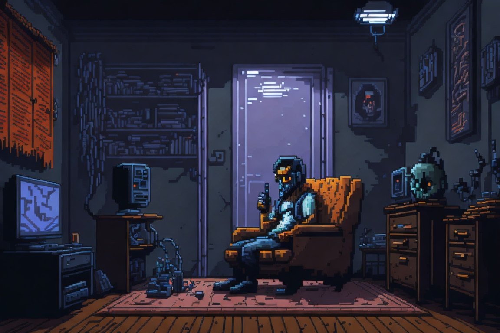

"Sou o criador e apresentador do podcast Não Durma. Narrar contos de terror é mais do que um hobby para mim, é uma paixão. Desde que me entendo por gente, sou um grande apreciador desse tipo de conteúdo. Diante desse amor pelo gênero, surgiu a ideia: por que não criar o meu próprio podcast? É uma forma de compartilhar histórias sinistras e mergulhar mais fundo nesse universo que tanto me fascina."
 E assim nasceu o Não durma.